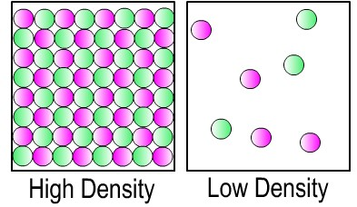
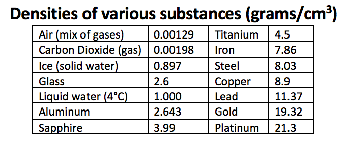
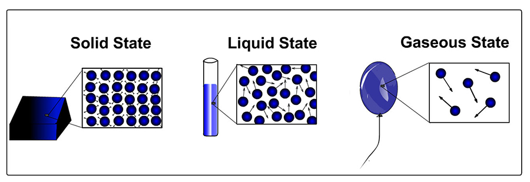

Density. When density of an object is how much mass is in a certain amount of space. The density of an object is equal to its mass divided by its volume. This relationship is shown below:
There is more mass in the same space for the object on the left below. So, the object on the left has a higher density.
Mass: The mass of an object is how much material (or "stuff") it is made of. An object's mass is basically the sum total of all of the atoms and molecules that make up the object. It also depends on what types of atoms make up the object.
(See the mass unit for more information about mass.)
Volume: The volume of an object is amount of space taken up by the object.
Back to Density. The density of an object is the amount of material it is made of divided by the space it occupies: mass of object / volume of object. The densities of some common materials are shown below.
(Back to the buoyancy unit.)
Density and state of matter. For the same type of substance, the density of the substance is in general greatest when the substance is in solid form. The same substance is generally less dense in its liquid state. And, you guessed it, the density of the substance is lowest when the substance is in gas form. The relationship between density and states of matter is shown in the picture below:



***Note for Teachers: You can access more information about this website and find other resources for science inquiry on the ISP Tutor website.
©2021 Klahr Lab, Carnegie Mellon University. All Rights Reserved
Carnegie Mellon University | Dept. of Psychology | 5000 Forbes Ave. | Pittsburgh, PA 15213 The TED project was funded in part by the Institute of Education Science (IES), Grant R305H060034, and in part by the National Science Foundation, Grant SBE035442. The ISP Tutor project is funded by IES, Grant R305A170176.
The research reported here was supported by the Institute of Education Sciences, U.S. Department of Education, through Grant R305A170176 to Carnegie Mellon University. The opinions expressed are those of the authors and do not represent views of the Institute or the U.S. Department of Education.